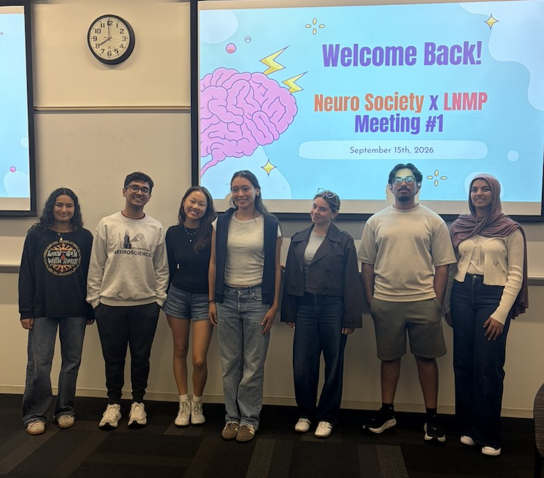

Mentor–Mentee Social
A community-building event designed to help mentors and mentees connect, talk, and build relationships.
LNM PROGRAM05 / EVENTS
Find LNM mentorship events, professional development opportunities, and events from NeuroSociety, a student organization we collaborate with.
LNM UPCOMING EVENTS
Mark your calendar for these fall 2026 events.
A community-building event designed to help mentors and mentees connect, talk, and build relationships.
LNM PROGRAMA program event focused on supporting students in NEUR 201 and helping them connect with the mentorship community.
LNM PROGRAMNeuropathways and registration guidance featuring Rochlin & Gobel.
LNM PROGRAMNEUROSOCIETY × LNM
NeuroSociety is a separate student organization that we work with. Their upcoming events are included here for easy access.
NeuroSociety general body meeting.
NEUROSOCIETYNeuroSociety general body meeting.
NEUROSOCIETYNeuroSociety participation in the ALS Walk For Life.
NEUROSOCIETYCOMMUNITY IN ACTION
Our September 15 welcome-back meeting brought both communities together.

LOYOLA NEUROSCIENCE
For additional neuroscience and research opportunities, check Loyola's current event listings.
Loyola’s neuroscience program maintains a current seminar schedule and program events.
Check the current calendar →Explore undergraduate research opportunities, faculty connections, and campus programs.
Explore research opportunities →